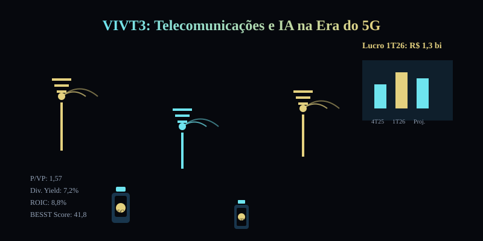

12/06: VIVT3, telecomunicações e IA no teste dos proventos e da 5G
Depois de locação, educação, embalagens e máquinas, a leitura avança para telecomunicações: a BESST coloca a Vivo dentro do Top 10, mas a tese só faz sentido se proventos sustentáveis, investimento em 5G e margem operacional caminharem juntos.

Telecomunicações parecem simples: vender planos, manter rede, cobrar mensalidade. Na prática, a criação de valor depende de investimento em infraestrutura, arbitragem de preço, retenção de clientes e disciplina no balanço.
Resposta curta: proventos sim, mas é tese de investimento e regulatória
VIVT3 é um caso de telecomunicações com proventos atractivos. Atrativos porque as notícias públicas de junho destacam aprovação de R$ 325 milhões em JCP (juros sobre capital próprio), valor bruto de R$ 0,10 por ação, e sustentação do momento positivo de lucro. Sustentado porque telecomunicações exige investimento pesado em rede, especialmente 5G, manutenção de margem diante da concorrência e navegação em ambiente regulatório ainda desafiador.
O que é telecomunicações com proventos atractivos? É uma tese em que a empresa gera caixa para distribuir aos acionistas, mas boa parte do resultado ainda depende do balanço de investimentos. Se o CAPEX 5G encarece, se a guerra de preços piorar ou se o ambiente regulatório tornar-se mais restritivo, os proventos podem ser reduzidos mais rápido do que em negócios de menor intensidade de capital.
Por que VIVT3 hoje?
No histórico de maio do BESST & Buffett do IA em Loop, VIVT3 está dentro do Top 10, no setor de telecomunicações, com dividend yield de 6,58%, P/VP de 1,69, pontuação BESST de 41,8 e classificação de setor como PERENE. O arquivo operacional também registra VIVT3 na posição 10, ainda dentro do corte usado pelo IA em Loop.
A consulta ao Fundamentus feita em 12/06/2026 mostrava cotação de R$ 33,86, P/L de 17,15, P/VP de 1,57, ROIC de 8,8%, ROE de 9,2%, margem EBIT de 16,1% e margem líquida de 10,5%. O conjunto combina proventos atractivos com valuation moderado e margens saudáveis — exatamente o tipo de caso em que o BESST ajuda a encontrar, mas não substitui, a checagem qualitativa de investimento e sustentabilidade.
O lucro do 1T26 e os proventos resolvem a tese?
Resolve uma parte, não a tese inteira. Lucro maior mostra que a operação está gerando caixa melhor, mas o negócio de telecomunicações exige olhar para quatro engrenagens ao mesmo tempo: investimento em rede (especialmente 5G), arbitragem de preço diante da concorrência (TIM, Claro), retenção de clientes em mercado maduro e disciplina de alavancagem. Se uma dessas engrenagens trava, o fluxo de caixa livre pode não sustentar proventos elevados.
A leitura da IA em Loop é: VIVT3 ficou estudável pelos proventos recentes e margens saudáveis, mas continua sendo uma tese de investimento de capital e ambiente regulatório. O BESST aponta dividendos e perenidade; o investidor precisa perguntar se esse fluxo de caixa é repetível quando a rede precisa de atualização contínua e a concorrência pressiona preços.
| Sinal | Leitura prática | O que monitorar |
|---|---|---|
| Top 10 BESST | Dividendos e perenidade colocam VIVT3 no radar quantitativo | Sustentabilidade do fluxo de caixa livre após CAPEX |
| JCP aprovado: R$ 325 mi | Indica geração de caixa e política de retorno aos acionistas | Capacidade de repetir proventos sem prejudicar investimento |
| Margens saudáveis | EBIT e líquida dentro de faixas históricas | Pressão de preços, custo de manutenção de rede e churn |
| P/VP moderado | Mercado valoriza estabilidade mais que crescimento explosivo | Retorno sobre investimento em 5G e capacidade de inovar |
Onde a IA pode ser vantagem real
Em telecomunicações, IA não é enfeite de marketing. Ela pode melhorar precificação dinâmica de planos, prever falhas na rede, reduzir churn através de ofertas personalizadas, otimizar roteamento de tráfego, detectar fraude, melhorar atendimento ao cliente e antecipar demandas por capacidade por região e segmento. A diferença entre uma operadora média e uma boa pode estar em pequenos pontos de retenção, eficiência de espectro e custo por bit transportado.
O lado bom
Ativo no Top 10 do BESST, proventos recentes atractivos, margens saudáveis, setor de telecomunicações com barreira de entrada elevada e espaço para IA aumentar eficiência de rede.
O lado perigoso
Negócio intensivo em CAPEX, sensível a guerra de preços, dependente de atualização tecnológica constante (5G, 6G) e sujeito a ambiente regulatório que pode limitar tarifas e exigir investimentos obrigatórios.
Compra, venda ou espera?
Para carteira nova: VIVT3 parece mais adequada para estudo disciplinado ou compra parcelada pequena do que para posição grande imediata. Os proventos atractivos chamam atenção, mas o investidor precisa aceitar volatilidade de investimento, concorrência e regulatória.
Para quem já tem: o ponto não é vender só porque o negócio é intensivo em capital, nem comprar mais só porque os proventos cresceram. A tese melhora se a empresa melhorar retorno sobre investimento em rede, manter margem diante da concorrência, girar o caixa livre para investimento e distribuir proventos sustentáveis. Piora se o retorno sobre CAPEX piorar demais, se a guerra de preços reduzir margem ou se o ambiente regulatório tornar-se mais restritivo.
Gatilhos para melhorar a leitura: retorno sobre investimento em 5G crescente, margem estável ou melhorando, churn reduzido, capacidade de inovar em serviços além da conectividade e disciplina de alavancagem. Gatilhos para piorar: retorno sobre CAPEX 5G caindo, aumento de endividamento para financiar rede, novas tarifas regulatórias mais baixas ou concorrência agressiva em preços.
Leitura IA em Loop
VIVT3 mostra por que o BESST deve ser usado como porta de entrada, não como piloto automático. O BESST encontra uma empresa com perenidade classificada, dividendos atractivos e setor com barreiras de entrada; a análise precisa decidir se esse fluxo de caixa é sustentável num setor que consome capital todos os dias para manter e atualizar a rede. A resposta de hoje é condicional: os proventos são atractivos o suficiente para estudar, mas o investimento contínuo e a regulatória ainda mandam na tese.